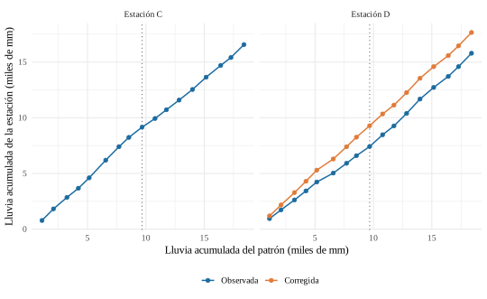
Tema 2
Cuantificación del recurso hídrico superficial
Presentación de clase basada en el libro Hidrología Aplicada a la Ingeniería Civil
Ing. Edwin Matarrita Segura
Escuela de Ingeniería Civil, Universidad de Costa Rica


Clases del tema
| Clase | Contenido | Capítulos del libro |
|---|---|---|
| 2.1 | Verificación y completado de registros | 9 |
| 2.2 | Variación de la precipitación y lluvia media de una cuenca | 7 |
| 2.3 | Evaporación | 18 |
| 2.4 | Evapotranspiración | 19 |
| 2.5 | Caudales medios: curva de duración, curva masa y oferta | 26, 27, 38 |
| 2.6 | Balance hídrico | 22, 23, 24, 45 |
2.1 Verificación y completado de registros
Capítulo 9 del libro
Qué problema resuelve
¿Cómo se sabe si una estación empezó a medir menos lluvia porque llovió menos o porque algo cambió en la estación?
- Casi todos los registros tienen huecos: falla el instrumento, falta el observador o se pierden archivos.
- Otros no tienen huecos, pero cambian sin que cambie el clima: la estación se movió o se cambió el pluviómetro.
- El análisis de frecuencia y los modelos necesitan series continuas y homogéneas.
En esta clase: control de calidad, curva de doble masa, relleno con estaciones vecinas, regresión y generación de series con Thomas y Fiering.
Relleno, extensión y control de calidad
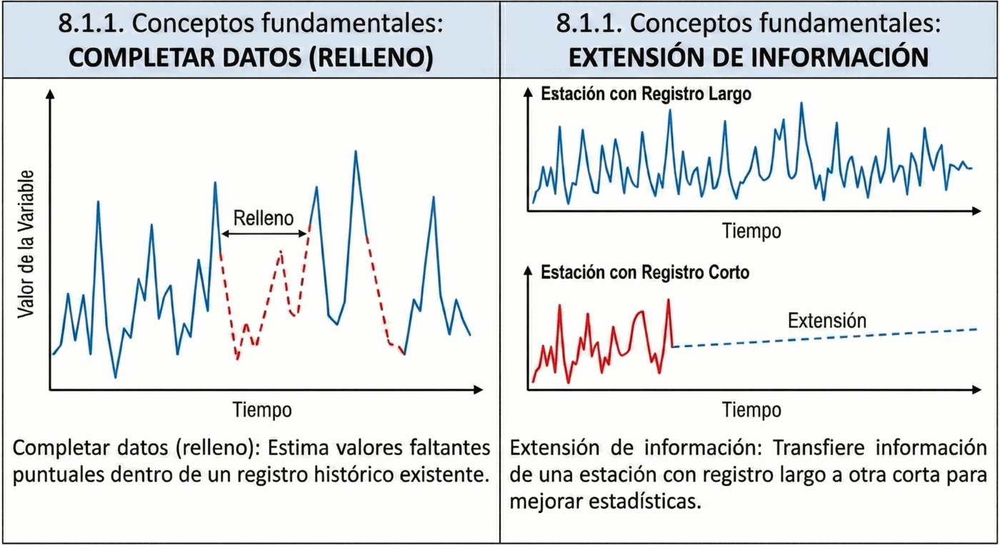
- Relleno: huecos dentro del periodo de registro.
- Extensión: alargar un registro corto con otro largo. Debe conservar la varianza.
Antes de rellenar, tres preguntas:
- ¿Los valores son posibles? Negativos, ceros en meses lluviosos, caudales que no cambian.
- ¿Concuerdan con las vecinas? 150 mm en un día con las vecinas en cero.
- ¿La serie es homogénea? Misma media y varianza salvo por el clima.
Un dato malo hace más daño que uno faltante: el faltante se ve y el malo no.
Curva de doble masa
- Eje horizontal: lluvia anual acumulada del patrón, promedio de tres o más vecinas confiables de la misma región climática.
- Eje vertical: lluvia anual acumulada de la estación en estudio.
- Estación consistente: una recta. Un cambio de pendiente sostenido varios años indica un cambio en la estación.
- Se usan totales anuales o estacionales.
Factor de ajuste si el periodo reciente es el correcto (Searcy & Hardison, 1960):
\[ F_a = \frac{M_a}{M_o} \qquad\qquad P_{\text{aj}} = F_a \, P_o \]
\(M_a\), \(M_o\): pendientes del tramo correcto y del que se corrige.
Pruebas de estabilidad
El ojo encuentra quiebres en cualquier serie. Antes de corregir se prueba si los dos tramos vienen de la misma población.
\[ t_c = \frac{\bar{x}_1 - \bar{x}_2}{s_p \sqrt{\dfrac{1}{n_1} + \dfrac{1}{n_2}}}, \qquad s_p = \sqrt{\frac{(n_1 - 1)\,s_1^2 + (n_2 - 1)\,s_2^2}{n_1 + n_2 - 2}} \qquad\qquad F_c = \frac{s_{\text{mayor}}^2}{s_{\text{menor}}^2} \]
- Media: se compara \(|t_c|\) con \(t_{0.975}\) y \(n_1 + n_2 - 2\) grados de libertad.
- Varianza: se compara \(F_c\) con \(F_{0.95}\); en el numerador van los grados de libertad del tramo de varianza mayor.
- Basta con que una prueba rechace para corregir. Si ninguna rechaza, la serie se deja como está.
- En R:
t.test(x1, x2, var.equal = TRUE)yvar.test().
Ejemplo: consistencia de dos estaciones
Cinco estaciones hipotéticas, 1970–1986; patrón: promedio de A, B y E.
Solución:
- Quiebre aparente en 1979.
- D: \(t_c = -3.70\) (\(t_{crit} = 2.13\)) y \(F_c = 4.53\) (\(F_{crit} = 3.50\)). Las dos rechazan.
- C: ninguna rechaza; no se toca.
- D: \(M_o = 0.767\), \(M_a = 0.960\) y \(F_a = 1.252\). 1970 pasa de 949 a 1188 mm; la media, de 929 a 1039 mm.
Dónde está el quiebre
Antes de corregir, busque en el historial de la estación una causa: traslado, cambio de equipo o mantenimiento.
Relleno con estaciones vecinas
Promedio aritmético, si las normales anuales difieren menos de 10 % (Linsley et al., 1958):
\[ P_x = \frac{1}{n} \sum_{i=1}^{n} P_i \]
Razón normal, si alguna difiere más de 10 % (Paulhus & Kohler, 1952):
\[ P_x = \frac{N_x}{n} \sum_{i=1}^{n} \frac{P_i}{N_i} \]
Inverso de la distancia:
\[ P_x = \frac{\sum P_i / d_i^{\,p}}{\sum 1 / d_i^{\,p}} \]
- \(N\): normales (medias de largo plazo), anuales o del mismo mes.
- La razón normal corrige que una vecina sea más lluviosa; el inverso de la distancia solo mira la cercanía.
- Las normales del mes representan mejor regímenes distintos.
Ejemplo: relleno de agosto de 1985
| Estación | Agosto 1985 (mm) | Normal anual (mm) | Normal de agosto (mm) | Distancia a X (km) |
|---|---|---|---|---|
| A | 125 | 1250 | 202 | 34 |
| B | 220 | 2050 | 235 | 13 |
| C | 374 | 2400 | 368 | 11 |
| X | — | 2350 | 320 | — |
Solución (datos hipotéticos):
- A es 47 % más seca que X: el promedio aritmético (239.7 mm) no es adecuado.
- Razón normal anual: \(\left(\frac{2350}{3}\right)(0.1000 + 0.1073 + 0.1558) = 284.5\) mm.
- Razón normal de agosto: \(\left(\frac{320}{3}\right)(0.6188 + 0.9362 + 1.0163) = 274.3\) mm (la mejor).
- Inverso del cuadrado de la distancia: 299.1 mm; C es la más cercana y la más lluviosa.
Regresión con una estación vecina
\[ \hat{y} = b_0 + b_1\,x, \qquad b_1 = r\,\frac{s_y}{s_x}, \qquad b_0 = \bar{y} - b_1\,\bar{x} \qquad\qquad t_c = \frac{r\,\sqrt{n - 2}}{\sqrt{1 - r^2}} \]
- Vecina de la misma región climática, revisada con doble masa y completa en las fechas que faltan.
- La correlación se prueba con \(t_c\) y \(n - 2\) grados de libertad; \(r^2\) dice qué parte de la varianza explica la recta.
- Para extender, la recta suaviza la serie: su varianza es \(r^2\) veces la real. Matalas & Jacobs (1964) agregaron un término aleatorio:
\[ y_t = \bar{y} + r\,\frac{s_y}{s_x}\,(x_t - \bar{x}) + \theta\,\sqrt{1 - r^2}\;s_y\,\varepsilon_t \]
\(\theta = 0\) para rellenar y \(\theta = 1\) para extender; \(\varepsilon_t\) es normal estándar.
Ejemplo: lluvia mensual de dos estaciones
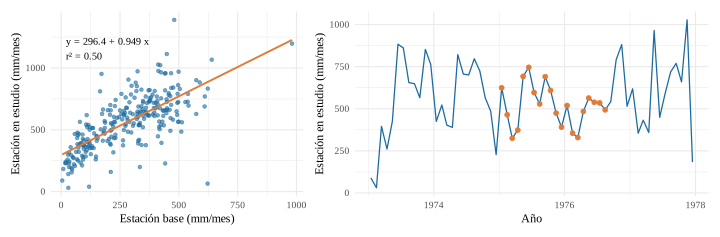
Solución: \(n = 274\) meses comunes y \(r = 0.706\), así que \(\hat{y} = 296.4 + 0.9486\,x\). La prueba da \(t_c = 16.4 \gg 1.97\), aunque \(r^2 = 0.50\). Enero de 1975: \(296.4 + 0.9486 \times 346.0 = 624.6\) mm. ⬇ Descargar lluvia_mensual_dos_estaciones.csv
Generación de series: Thomas y Fiering
Los caudales mensuales tienen memoria: la cuenca se vacía despacio. Modelo autorregresivo con parámetros por mes (Thomas & Fiering, 1962):
\[ Q_{j+1} = \bar{Q}_{j+1} + b_j\,(Q_j - \bar{Q}_j) + Z\,s_{j+1}\,\sqrt{1 - r_j^2}, \qquad b_j = r_j\,\frac{s_{j+1}}{s_j} \]
- 36 parámetros: 12 medias, 12 desviaciones y 12 correlaciones de cada mes con el siguiente.
- Para rellenar, \(Z = 0\); varios meses seguidos se rellenan en cadena.
- Para generar series sintéticas, \(Z\) normal estándar. Con cientos de series se estudian sequías más largas que las observadas.
- En ríos muy variables puede dar caudales negativos: se aplica a \(\ln Q\).
Ejemplo: caudales de una estación de montaña

32 años de caudal mensual; faltan 28 meses desde 1988.
Solución:
- Junio: 11.70 m³/s; julio: 11.32 m³/s; \(s = 3.94\) en los dos; \(b_6 = 0.494\).
- Julio de 1988: \(11.32 + 0.494\,(6.4 - 11.70) = 8.70\) m³/s.
- Agosto, desde 8.70: 9.91 m³/s.
Código: un paso del modelo
library(tidyverse)
# 1) Caudal medio mensual (m³/s), en orden cronológico
caudal <- read_csv("../datos/caudal_mensual_estacion_montana.csv") %>%
pivot_longer(-anio, names_to = "mes_txt", values_to = "q") %>%
mutate(mes = match(mes_txt, c("ene", "feb", "mar", "abr", "may", "jun",
"jul", "ago", "sep", "oct", "nov", "dic"))) %>%
arrange(anio, mes)
# 2) Parámetros de cada mes j: media, desviación y correlación con j + 1
parametros <- caudal %>%
mutate(q_siguiente = lead(q)) %>% # diciembre se empareja con el enero siguiente
group_by(mes) %>%
summarise(media = mean(q, na.rm = TRUE),
desv = sd(q, na.rm = TRUE),
r = cor(q, q_siguiente, use = "complete.obs")) %>%
mutate(media_sig = lead(media, default = first(media)),
desv_sig = lead(desv, default = first(desv)),
b = r * desv_sig / desv)
# Un paso del modelo: del mes j (caudal q_j) al mes siguiente
paso <- function(q_j, j, z = 0) {
p <- parametros[j, ]
p$media_sig + p$b * (q_j - p$media) + z * p$desv_sig * sqrt(1 - p$r^2)
}
# 3) Relleno en cadena con Z = 0
caudal$relleno <- is.na(caudal$q)
caudal$q_completo <- caudal$q
for (i in which(caudal$relleno)) {
j <- if (caudal$mes[i] == 1) 12 else caudal$mes[i] - 1 # mes anterior
caudal$q_completo[i] <- paso(caudal$q_completo[i - 1], j)
}2.2 Variación de la precipitación y lluvia media de una cuenca
Capítulo 7 del libro
Qué problema resuelve
Una cuenca tiene cinco pluviómetros y cada uno midió algo distinto. ¿Cuánta lluvia cayó sobre la cuenca?
- Las estaciones miden en un punto; los balances y los modelos necesitan la lámina media de la cuenca.
- La lluvia cambia en el espacio (latitud, relieve) y en el tiempo (entre años, entre meses y dentro de una tormenta).
- Para diseñar no basta con cuánta lluvia cae: importa cuándo y con qué intensidad.
En esta clase: variación espacial y temporal, análisis de una tormenta y precipitación media por promedio aritmético, Thiessen, isoyetas e inverso de la distancia.
Variación espacial
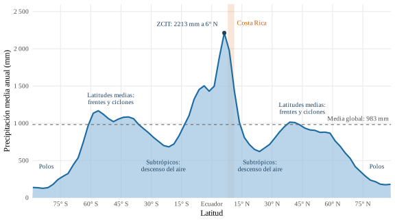
- ZCIT, 5° a 10° N: más de 2000 mm al año. Costa Rica está en su borde norte.
- Subtrópicos: el aire desciende y se seca.
- El relieve concentra la lluvia en barlovento: el Caribe llueve casi todo el año y el Pacífico Norte tiene cinco o seis meses secos.
Lluvia y altitud
\[ P = a + b\,H \]
- Se ajusta por regresión con estaciones de una región homogénea.
- No sirve de una vertiente a otra: a la misma altitud llueve mucho más en barlovento.
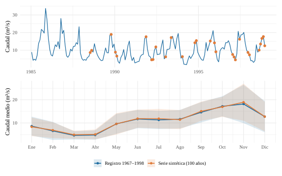
Diez estaciones del IMN en la cuenca del río Grande de Tárcoles. Solución:
- \(P = 1123 + 0.785\,H\), con \(r = 0.357\).
- \(t_c = 1.08 < t_{0.975;\,8} = 2.31\): la altitud no explica la lluvia aquí.
- Pesa más la posición respecto de la cordillera.
Variación temporal
- Entre años: El Niño-Oscilación del Sur. Con El Niño llueve menos en el Pacífico y más en el Caribe; con La Niña, al revés.
- Entre meses: régimen del Pacífico (época seca de diciembre a abril y veranillo en julio y agosto) y del Caribe (lluvia casi todo el año).
- Dentro de una tormenta: la misma lámina produce crecidas distintas si cae en media hora o en seis.

Análisis de una tormenta
\[ i = \frac{\Delta h}{\Delta t} \]
- Intensidad \(i\) (mm/h), duración \(d\) y frecuencia (\(T = \frac{1}{p}\)): la base de las curvas IDF.
- Curva masa: lluvia acumulada contra el tiempo; su pendiente es la intensidad.
- Hietograma: lámina o intensidad de cada intervalo; así entra la lluvia a los modelos.
- La lluvia máxima en una duración \(d\) es la mayor diferencia entre dos puntos de la curva masa separados por \(d\).
Ejemplo: tormenta registrada cada 10 min

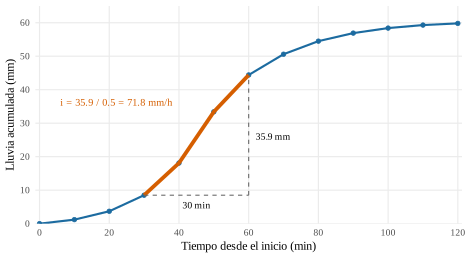
Solución: 59.8 mm en 2 h. Máximo de 10 min: \(15.3 \times 6 = 91.8\) mm/h. De 30 min: \(\frac{9.6 + 15.3 + 11.0}{0.5} = 71.8\) mm/h. De 60 min: 50.8 mm/h.
La intensidad máxima baja con la duración: por eso el método racional usa la duración igual al tiempo de concentración.
Precipitación media de una cuenca
\[ \bar{P} = \sum_{i=1}^{n} w_i\,P_i, \qquad \sum_{i=1}^{n} w_i = 1 \]
- Aritmético: \(w_i = \frac{1}{n}\). Solo en terreno suave y con estaciones bien repartidas.
- Thiessen: \(w_i = \frac{A_i}{A}\), el área más cercana a cada estación (Thiessen, 1911).
- Los pesos sirven para cualquier evento mientras no cambie la red.
- No considera el relieve y crea saltos en los bordes.
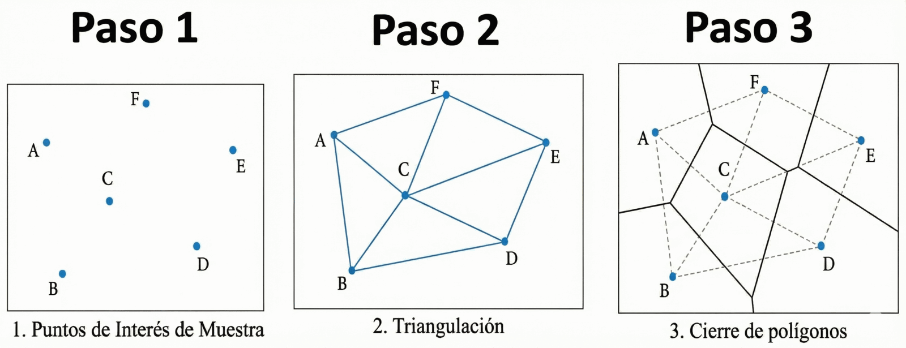
Ejemplo: Thiessen y promedio aritmético
| Estación | Lluvia (mm) | Área (km²) |
|---|---|---|
| A | 3.90 | 25.0 |
| B | 3.35 | 20.8 |
| C | 3.55 | 61.3 |
| D | 3.50 | 11.0 |
| E | 3.10 | 56.9 |
Solución:
- Pesos: \(w_A = \frac{25.0}{175} = 0.143\); \(w_B = 0.119\), \(w_C = 0.350\), \(w_D = 0.063\), \(w_E = 0.325\).
- Aportes: 0.558, 0.399, 1.243, 0.221 y 1.008 mm.
- Thiessen: \(\bar{P} = 3.43\) mm.
- Aritmético: \(\bar{P} = 3.48\) mm.
A, la más lluviosa, pesa en el aritmético lo mismo que C, cuyo polígono es más del doble.
Isoyetas
\[ \bar{P} = \frac{1}{A}\sum_{j=1}^{m} A_j\,\bar{P}_j \]
- Quien las traza incorpora el relieve y la forma de la tormenta.
- Con red densa y buen criterio, el más fiel de los métodos clásicos; depende de quien lo hace.
Ejemplo: 50 km²; franjas de 12, 18, 14 y 6 km² con 50, 70, 90 y 110 mm.
Solución: \(\bar{P} = \frac{3780}{50} = 75.6\) mm.
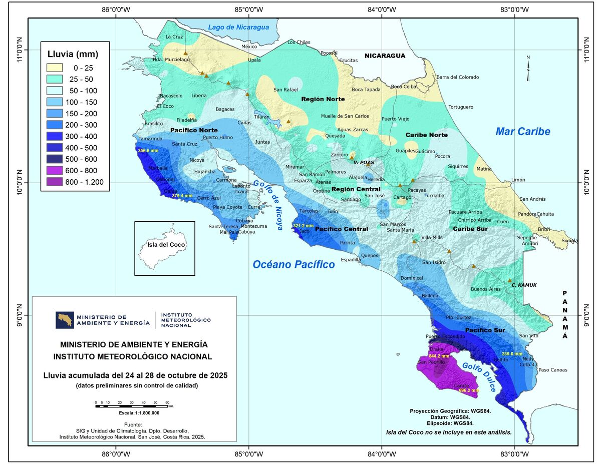
Inverso de la distancia
\[ P_x = \frac{\sum_{i=1}^{n} P_i / d_i^{\,p}}{\sum_{i=1}^{n} 1 / d_i^{\,p}} \]
- \(p = 2\) es lo más común; un \(p\) mayor da más peso a la estación cercana (Shepard, 1968).
- Para la media de la cuenca se estima la lluvia en una malla y se promedian las celdas dentro.
Ejemplo: punto a 2, 4 y 5 km de estaciones con 1500, 2200 y 1100 mm.
Solución: pesos \(0.250\), \(0.0625\) y \(0.040\) (suman 0.3525). \(P_x = \frac{556.5}{0.3525} = 1579\) mm; la estación más cercana lleva 71 % del peso.
Tres métodos en la misma cuenca
La estación 5 está fuera de la cuenca: no entra en el promedio aritmético, pero su polígono sí puede entrar en Thiessen.
Factor de reducción por área
\[ FRA = \frac{P_A}{P_0} = 1 - e^{-1.1\,t^{0.25}} + e^{-1.1\,t^{0.25} - 0.003863\,A} \]
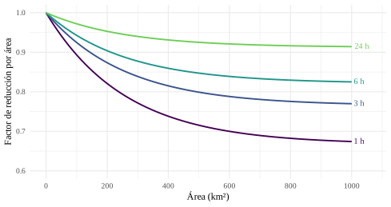
Ajuste de Leclerc & Schaake (1972) a las curvas del TP-29, con \(t\) en h y \(A\) en km² (R. J. Allen & DeGaetano, 2002).
Ejemplo, 300 km² y \(T = 50\) años. Solución:
- 24 h: \(FRA = 1 - 0.0876 + 0.0275 = 0.940\) y \(P_A = 0.940 \times 200 = 188.0\) mm.
- 1 h: \(FRA = 0.772\) y \(P_A = 0.772 \times 80 = 61.7\) mm.
2.3 Evaporación
Capítulo 18 del libro
Qué problema resuelve
¿Cuánta agua pierde un embalse en la época seca aunque nadie la use?
- En la época seca, con sol, aire seco y viento, la evaporación de un embalse puede compararse con lo que se extrae para riego o abastecimiento.
- Entra en el balance de cualquier embalse, laguna o reservorio.
- También seca el suelo entre lluvias y cambia cuánto escurre en la tormenta siguiente.
En esta clase: el proceso físico, el tanque evaporímetro y los métodos de estimación (balance de energía, aerodinámico, Meyer, Penman y Priestley y Taylor).
El proceso físico
- Escapan las moléculas más rápidas y regresan otras: se mide la evaporación neta.
- Calor latente (R. G. Allen et al., 1998): \(\lambda = 2.501 - 0.002361\,T_s\) MJ/kg, cerca de 2.45 MJ/kg. Es la energía para evaporar 1 mm sobre 1 m².
- Ley de Dalton (Chow et al., 1988):
\[ E = k\,(e_s - e_a) \]
- \(e_s - e_a\): déficit de presión de vapor. Si \(e_a > e_s\) hay condensación (rocío).
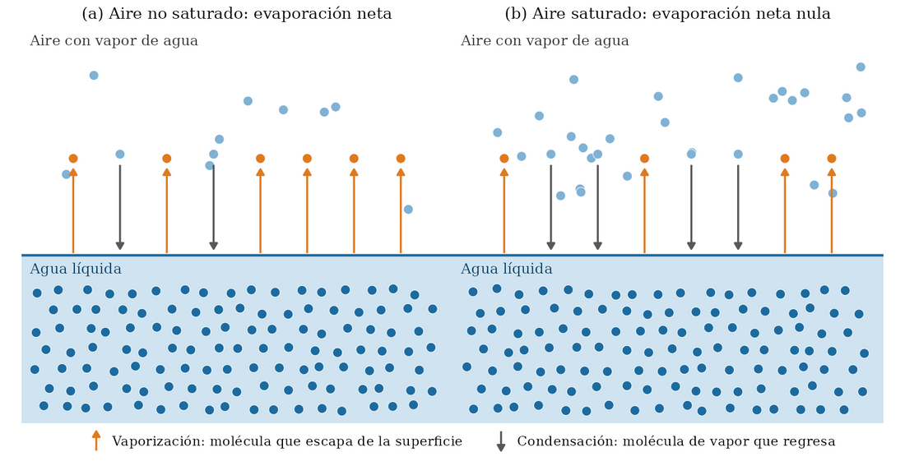
Factores: radiación, temperatura, humedad y viento. Actúan juntos.
Agua libre y suelo húmedo
Agua libre:
- El agua nunca falta; depende de la energía y del aire.
- En lagos profundos el máximo de evaporación llega con retraso respecto del de radiación.
- Las sales bajan la presión de vapor y la evaporación.
Suelo húmedo, en dos etapas:
- Limitada por la energía: superficie mojada, casi como agua libre.
- Limitada por el suelo: el agua sube por capilaridad, el frente de secado baja y la evaporación cae.
Las arcillas sostienen la evaporación más días que las arenas.
¿Por qué la ropa tendida se seca más rápido en un día con viento, aunque esté nublado?
Tanque evaporímetro clase A
- 120.7 cm de diámetro y 25 cm de profundidad, sobre una tarima a 15 cm del suelo, lleno hasta 5 cm del borde (R. G. Allen et al., 1998).
- Evapora más que un embalse: poca agua, paredes que absorben calor, aire que no se ha humedecido.
\[ E_L = K_p\,E_{\text{tanque}} \]
- \(K_p\) entre 0.60 y 0.85; se usa 0.70 para valores anuales, pero cambia con la estación y el sitio (Chow et al., 1988).
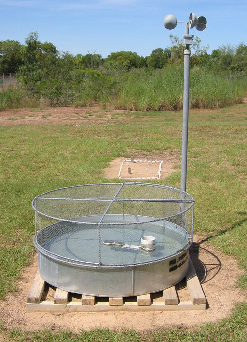
Ejemplo: pérdida anual de un embalse
Embalse de 12 km² en el Pacífico seco; tanque clase A con evaporación mensual hipotética y \(K_p = 0.70\).
| Mes | Ene | Feb | Mar | Abr | May | Jun | Jul | Ago | Set | Oct | Nov | Dic |
|---|---|---|---|---|---|---|---|---|---|---|---|---|
| Tanque (mm) | 220 | 240 | 290 | 270 | 180 | 130 | 150 | 145 | 115 | 110 | 130 | 180 |
Solución:
- Tanque: 2160 mm al año. Embalse: \(E_L = 0.70 \times 2160 = 1512\) mm.
- Volumen: 1 mm sobre 1 km² son 1000 m³, así que \(V = 1512 \times 12 \times 1000 = 18.1\) hm³.
- Marzo: \(0.70 \times 290 = 203\) mm y 2.44 hm³.
Más de la mitad se pierde de enero a abril. Un error de 0.1 en \(K_p\) cambia la pérdida en 2.6 hm³.
Balance de energía y método aerodinámico
\[ R_n - G - H - \lambda\,\rho_w\,E = 0 \qquad\Rightarrow\qquad E_r = \frac{R_n}{\lambda\,\rho_w} \]
- Límite por energía: toda la radiación neta se gasta en evaporar. 100 W/m² evaporan 3.5 mm/d.
\[ E_a = B\,(e_s - e_a), \qquad B = \frac{0.622\,k^2\,\rho_a\,u_2}{P\,\rho_w\,\left[\ln(z_2/z_0)\right]^2} \]
- Límite por transporte de vapor, con perfil logarítmico del viento; \(k = 0.4\) y \(z_0\) de 0.01 a 0.06 cm en agua abierta (Chow et al., 1988).
Meyer, Penman y Priestley y Taylor
Meyer (1915), empírica, mensual (Aparicio, 1992):
\[ E_m = C\,(e_s - e_a)\left(1 + \frac{V_w}{16.09}\right) \]
\(E_m\) en cm, presiones en pulgadas de mercurio, viento a 10 m en km/h; \(C = 28\) en embalses grandes y 38 en tanques. No se calibró en el trópico.
Penman combina los dos límites (Penman, 1948):
\[ E = \frac{\Delta}{\Delta + \gamma}\,E_r + \frac{\gamma}{\Delta + \gamma}\,E_a \]
\(\Delta = \frac{4098\,e_s}{(T + 237.3)^2}\) y \(\gamma = \frac{0.0016286\,P}{\lambda}\).
Priestley y Taylor, superficies húmedas extensas (Priestley & Taylor, 1972): \(E = \frac{1.3\,\Delta}{\Delta + \gamma}\,E_r\)
Ejemplo: un embalse por cinco métodos
Día de la época seca (hipotético): \(R_n = 180\) W/m², 28 °C, HR 55 %, \(u_2 = 4\) m/s, \(P = 100.5\) kPa, \(z_0 = 0.03\) cm.
Solución:
- \(\lambda = 2.435\) MJ/kg, \(\rho_a = 1.163\) kg/m³, \(e_s = 3.780\) y \(e_a = 2.079\) kPa.
- \(E_r = \frac{180}{2.435 \times 10^6 \times 996} = 6.41\) mm/d.
- \(B = 5.96 \times 10^{-11}\) m/(Pa·s) y \(E_a = 8.77\) mm/d.
- \(\Delta = 0.220\), \(\gamma = 0.0672\) kPa/°C; pesos 0.766 y 0.234: Penman da 6.96 mm/d.
- Priestley y Taylor: \(1.3 \times 0.766 \times 6.41 = 6.39\) mm/d.
- Meyer, con \(u_{10} = 17.0\) km/h: 9.65 mm/d.
| Método | E (mm/d) |
|---|---|
| Balance de energía | 6.41 |
| Aerodinámico | 8.77 |
| Penman | 6.96 |
| Priestley y Taylor | 6.39 |
| Meyer | 9.65 |
Meyer da más: su coeficiente viene de lagos templados.
Qué limita la evaporación
Penman siempre queda entre \(E_r\) y \(E_a\). Meyer se calcula para un mes de 30 días y se pasa a mm/d.
2.4 Evapotranspiración
Capítulo 19 del libro
Qué problema resuelve
En la época seca de Guanacaste el sol es fuerte, el aire está seco y sopla el viento. ¿Por qué la ETR de un pastizal sin riego es mínima en marzo?
- De cada 100 unidades de lluvia sobre los continentes, unas 61 vuelven a la atmósfera (Chow et al., 1988).
- Es la salida más grande del balance de casi cualquier cuenca: define el riego, la recarga y el caudal de la época seca.
En esta clase: ETP, \(ET_o\), \(ET_c\) y ETR; Thornthwaite, Hargreaves y Samani, FAO Penman-Monteith; ETR anual con Turc y con Holdridge; coeficientes de cultivo y satélites.
Evaporación más transpiración
- Evaporación: del suelo, de los charcos y del agua interceptada por las hojas.
- Transpiración: raíces, xilema, estomas. La planta retiene cerca del 1 % del agua que absorbe (Aparicio, 1992).
- Con suelo descubierto domina la evaporación; con el follaje cerrado, la transpiración.
Factores (Chow et al., 1988):
- Energía: 2.45 MJ por kilogramo de agua.
- Transporte de vapor: déficit de presión de vapor y viento.
- Agua disponible: al secarse el suelo, las plantas cierran los estomas y la ET baja aunque la atmósfera demande lo mismo.
Cuatro conceptos que se confunden
| ETP | \(ET_o\) | \(ET_c\) | ETR | |
|---|---|---|---|---|
| Superficie | Vegetación verde extensa | Pasto hipotético de 0.12 m | Cultivo concreto | La que existe |
| Agua en el suelo | Sin limitación | Sin limitación | Sin limitación | La disponible |
| Cómo se obtiene | Thornthwaite, Holdridge | FAO Penman-Monteith | \(k_c\, ET_o\) | \(k_s\, k_c\, ET_o\), balance, satélite |
| Uso típico | Clima, balances regionales | Comparar climas, riego | Demanda de riego | Balance, recarga, caudal |
- La ETR no supera a la lluvia (sin riego) ni a la ETP. En clima húmedo se acerca a la ETP; en clima seco, a la lluvia.
- La ETP mide lo que el aire podría llevarse, no lo que el suelo puede entregar.
Coeficiente de estrés hídrico
\[ k_s = \begin{cases} 1, & D_r \le AFA \\[4pt] \dfrac{ADT - D_r}{(1 - p)\, ADT}, & D_r > AFA \end{cases} \]
- \(ADT\): agua entre capacidad de campo y punto de marchitez.
- \(AFA = p\,ADT\), con \(p\) de 0.3 a 0.7 según el cultivo.
- \(D_r\): agua consumida desde la capacidad de campo.
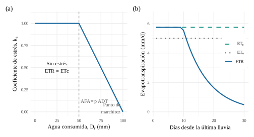
Método de Thornthwaite
Solo temperatura media mensual y latitud (Thornthwaite, 1948):
\[ i_j = \left(\frac{T_j}{5}\right)^{1.514}, \qquad I = \sum_{j=1}^{12} i_j, \qquad e_j = 16 \left(\frac{10\, T_j}{I}\right)^{a}, \qquad \mathrm{ETP}_j = \frac{N_j}{12}\, \frac{d_j}{30}\, e_j \]
\[ a = 6.75 \times 10^{-7} I^3 - 7.71 \times 10^{-5} I^2 + 1.792 \times 10^{-2} I + 0.49239 \]
- \(N_j\): horas de luz a mitad de mes; \(d_j\): días del mes.
- No ve el viento ni la humedad; el exponente se ajustó en clima templado.
- Con \(T_j \ge 26.5\) °C se usa \(e_j = -415.85 + 32.24\,T_j - 0.43\,T_j^2\) (Willmott et al., 1985).
- En R:
SPEI::thornthwaite().
Ejemplo: Thornthwaite en el Valle Central
| Mes | Ene | Feb | Mar | Abr | May | Jun | Jul | Ago | Set | Oct | Nov | Dic |
|---|---|---|---|---|---|---|---|---|---|---|---|---|
| \(T\) (°C) | 20.3 | 20.8 | 21.6 | 22.1 | 22.0 | 21.6 | 21.3 | 21.3 | 21.1 | 20.8 | 20.5 | 20.2 |
Solución:
- Abril: \(i = \left(\frac{22.1}{5}\right)^{1.514} = 9.488\). Suma: \(I = 106.43\), de donde \(a = 2.340\).
- \(e_{abr} = 16\,(10 \times \frac{22.1}{106.43})^{2.340} = 88.4\) mm/mes.
- A 10° N el día dura 12.23 h en abril: \(K = 1.019\) y \(\mathrm{ETP}_{abr} = 90.1\) mm.
- Los doce meses suman unos 972 mm.
Varía poco de un mes a otro: no distingue un marzo despejado de un octubre nublado.
Método de Hargreaves y Samani
\[ ET_o = 0.0023\,(T_{med} + 17.8)\,\sqrt{T_{max} - T_{min}}\; R_a \]
- La amplitud térmica indica la nubosidad (Hargreaves & Samani, 1985). La FAO la recomienda si faltan radiación, humedad o viento (R. G. Allen et al., 1998).
- \(R_a\): radiación extraterrestre (latitud y día del año), en mm/d: \(0.408 \times\) MJ/(m²·d).
\[ R_a = \frac{24 \times 60}{\pi}\, G_{sc}\, d_r \left[\omega_s \sin\varphi \sin\delta + \cos\varphi \cos\delta \sin\omega_s\right] \]
Ejemplo, 15 de julio a 10° N, \(T_{max} = 29.8\) y \(T_{min} = 18.3\) °C. Solución: \(R_a = 37.05\) MJ/(m²·d) \(= 15.12\) mm/d; \(ET_o = 0.0023 \times 41.85 \times 3.391 \times 15.12 = 4.94\) mm/d, unos 153 mm en julio.
FAO Penman-Monteith
\[ ET_o = \frac{0.408\,\Delta\,(R_n - G) + \gamma\,\dfrac{900}{T + 273}\,u_2\,(e_s - e_a)}{\Delta + \gamma\,(1 + 0.34\,u_2)} \]
- Penman con resistencia aerodinámica y superficial (Monteith, 1965); para el pasto de referencia, \(r_s = 70\) s/m y albedo 0.23.
- \(e_s\) es el promedio de \(e^\circ(T_{max})\) y \(e^\circ(T_{min})\); \(R_n = 0.77\,R_s - R_{nl}\) y \(G \approx 0\).
Ejemplo, 10° N y 1000 m, 27 y 17 °C, HR 95 y 55 %, \(u_2 = 2\) m/s, \(R_s = 18\) MJ/(m²·d). Solución:
- \(\gamma = 0.0599\), \(\Delta = 0.1611\) kPa/°C y \(e_s - e_a = 0.851\) kPa.
- \(R_n = 13.86 - 2.75 = 11.11\) MJ/(m²·d).
- \(ET_o = 3.98\) mm/d; Hargreaves y Samani da 4.38 mm/d.
ETR anual: Turc y Holdridge
Turc, con cuencas de muchos climas (Turc, 1954):
\[ \overline{E} = \frac{\overline{P}}{\sqrt{0.9 + \overline{P}^2/L^2}} \]
con \(L = 300 + 25\,t + 0.05\,t^3\).
Holdridge y Rodríguez y Saborío, con cuencas de Costa Rica (Holdridge, 1967; Rodríguez & Saborío, 1983):
\[ \mathrm{ETP} = 58.93\, T_b \qquad RE = \frac{\mathrm{ETP}}{P} \]
y \(\mathrm{ETR} = F\,\mathrm{ETP}\).
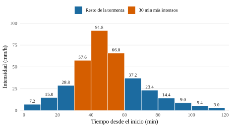
Tramo recto: \(F = 1.12 - 0.44\,RE\).
Ejemplo, 1200 mm y 20 °C. Solución: Turc, \(L = 1200\) y \(\overline{E} = 871\) mm. Holdridge, \(RE = 0.982\), \(F = 0.688\) y ETR \(= 811\) mm.
ETR anual de una cuenca
La diferencia entre los dos métodos pasa entera al excedente, que es lo que se busca para estimar el caudal medio.
Coeficientes de cultivo y de estrés
\[ \mathrm{ETR} = k_s\, k_c\, ET_o \]

- Cuatro etapas: inicial, desarrollo, mediados de temporada y final (R. G. Allen et al., 1998).
- Caña: \(k_{c,\mathrm{med}} = 1.25\); piña sin cobertura: 0.30.
- En clima seco y ventoso \(k_{c,\mathrm{med}}\) se corrige con \(u_2\), \(HR_{\min}\) y la altura.
Marzo en el Tempisque, \(ET_o = 189\) mm: caña (\(k_c = 1.37\)) 259 mm; piña (\(k_c = 0.39\)) 73 mm.
Evapotranspiración con satélites
- Una superficie que evapotranspira se enfría: con la temperatura de la superficie se resuelve el balance de energía en cada píxel.
- SEBAL y METRIC (Landsat, 30 m), SSEBop, MOD16 (500 m a 1 km) (Mu et al., 2011; Senay et al., 2013).
\[ ET_f = \frac{T_h - T_s}{T_h - T_c}, \qquad \mathrm{ETR} = ET_f \cdot ET_o \]
- En Costa Rica: nubes, píxeles que mezclan coberturas y validación fuera del trópico.
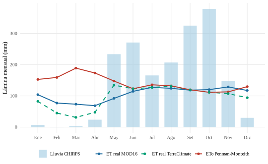
2.5 Caudales medios: curva de duración, curva masa y oferta
Capítulos 26, 27 y 38 del libro
Qué problema resuelve
¿Hay agua en este punto del río, en todos los meses, después de dejar lo que necesita el río y lo que ya tienen otros usuarios?
- El caudal medio está inflado por las crecidas y sobrestima lo que se puede usar.
- Una toma necesita saber cuántos días tendrá agua; un embalse, cuánto debe guardar para pasar la época seca.
En esta clase: curva de duración, curva de variación estacional, curva masa de Rippl y pico secuente, oferta y demanda, confiabilidad e indicadores de escasez.
Curva de duración de caudales
Todos los caudales diarios, ordenados de mayor a menor (Searcy, 1959; Vogel & Fennessey, 1994):
\[ p_i = \frac{i}{n + 1} \]
- \(Q_p\): caudal igualado o superado el \(p\) % del tiempo. \(Q_{50}\) es la mediana.
- No es una curva de frecuencia: los días seguidos no son independientes y \(Q_{95}\) no tiene periodo de retorno.
- La curva mediana de las curvas anuales representa un año típico.
La forma resume el régimen (Smakhtin, 2001):
- Tramo alto (\(Q_1\) a \(Q_{10}\)): crecidas.
- Tramo medio (\(Q_{20}\) a \(Q_{70}\)): régimen de lluvias y regulación natural.
- Tramo bajo (\(Q_{70}\) a \(Q_{99}\)): flujo base. Plano si hay acuíferos que sostienen el caudal.
- \(\frac{Q_{90}}{Q_{50}}\) crece con el aporte de agua subterránea.
Para usos de diseño, la curva diaria; la mensual sirve para balances.
Ejemplo: curva de duración de una cuenca de 85 km²
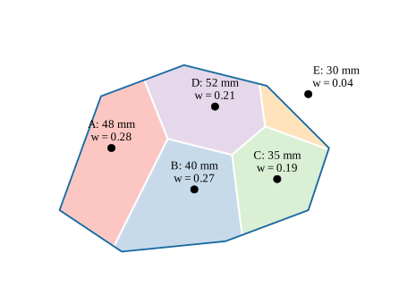
Cuenca hipotética del Pacífico, 1991–2020. Solución:
- \(n = 10\,958\) días, ordenados de mayor a menor.
- \(Q_{95}\): \(i = 0.95 \times 10\,959 = 10\,411\), de donde \(Q_{95} = 1.243\) m³/s.
- \(Q_{50} = 3.451\) y \(Q_{90} = 1.436\) m³/s.
- \(\bar{Q} = 5.051\) m³/s; \(\frac{Q_{90}}{Q_{50}} = 0.42\).
Curva de variación estacional
¿Qué caudal se espera en abril con una probabilidad dada? (Villón Béjar, 2002)
- Caudales medios mensuales de \(n\) años.
- Cada mes, de mayor a menor, con la posición de Hazen \(P = 100\,\frac{2m - 1}{2n}\).
- Ajustar una distribución a cada mes (log-normal o Pearson III).
- Graficar, para cada probabilidad, el caudal contra el mes.
La curva del 90 % no es un año real: cada mes se analiza por separado.
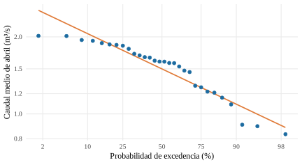
Abril (hipotético): \(\mu_y = 0.4047\) y \(\sigma_y = 0.2477\), así que \(Q_{90} = e^{\mu_y - 1.2816\,\sigma_y} = 1.091\) m³/s.
Caudal disponible según la excedencia
⬇ Descargar caudal_mensual_hipotetico_1991_2020.csv Cuenca hipotética de 85 km². En abril y mayo, una toma de 1.2 m³/s no tiene 90 % de confiabilidad.
Curva masa de Rippl
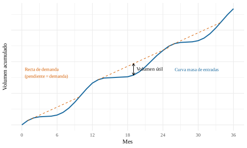
- Volumen de entrada acumulado contra el tiempo (Rippl, 1883). Su pendiente es el caudal.
- La demanda constante es una recta.
- Desde cada cresta se traza la recta de demanda; la mayor separación vertical con la curva masa es el volumen útil.
Algoritmo del pico secuente (Aparicio, 1992):
\[ K_t = \max\left(0,\; K_{t-1} + D_t - I_t\right) \]
Volumen útil \(= \max K_t\).
Ejemplo: volumen útil de un embalse para riego
| Ene | Feb | Mar | Abr | May | Jun | Jul | Ago | Set | Oct | Nov | Dic | |
|---|---|---|---|---|---|---|---|---|---|---|---|---|
| Año 1 (hm³) | 1.2 | 0.8 | 0.6 | 0.5 | 1.5 | 4.0 | 3.2 | 3.8 | 6.5 | 8.0 | 4.5 | 2.0 |
| Año 2 (hm³) | 1.0 | 0.7 | 0.5 | 0.4 | 1.0 | 3.0 | 2.5 | 3.0 | 5.5 | 7.0 | 3.5 | 1.5 |
Solución:
- Enero: \(K = \max(0,\; 0 + 2.2 - 1.2) = 1.0\); febrero 2.4; marzo 4.0; abril 5.7; mayo 6.4 hm³.
- Desde junio el déficit baja: 4.6, 3.6, 2.0 y cero en setiembre.
- En el año 2, más seco, sube hasta 7.6 hm³ en mayo. Volumen útil: 7.6 hm³ (en R,
reservoir::Rippl()).
Curva masa y volumen útil
Sin evaporación del embalse; en un diseño real se resta la evaporación del espejo de agua cada mes.
Oferta y demanda
Oferta, en tres niveles:
- Total: caudal medio natural.
- En estiaje: \(Q_{90}\) o \(Q_{95}\), el mes más seco o un año seco.
- Disponible:
\[ Q_{\text{disp}} = Q_{p} - Q_{\text{amb}} - \sum Q_{\text{conc}} \]
Se calcula mes a mes. No cuente dos veces el flujo base y la recarga del acuífero.
Demanda:
\[ Q_{\text{hum}} = \frac{P\, D}{86\,400 \times 1000} \]
\[ Q_{\text{riego}} = \frac{(ET_c - P_e)\, A}{1000\, E\, \Delta t} \]
- Dotaciones: 200, 250 y 300 L/persona/d en zona rural, urbana y turística; 115 L/d por res (Ministerio de Ambiente y Energía, Dirección de Agua, 2021).
- Eficiencia \(E\): 0.4 a 0.6 por gravedad y 0.8 a 0.9 por goteo.
Ejemplo: ¿cabe una concesión de riego?

250 ha de caña, 18 000 habitantes y 4000 reses; 0.15 m³/s concesionados aguas arriba; \(E = 0.6\). Datos hipotéticos. Solución para marzo:
- Acueducto 0.042, ganado 0.005 y riego 0.296 m³/s.
- Disponible: \(0.62 - 0.25 - 0.15 = 0.22\) m³/s; saldo \(-0.123\) m³/s.
- Manda abril: caben 94 ha. Las 250 ha piden 0.77 hm³ de almacenamiento.
Confiabilidad del abastecimiento
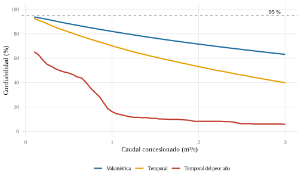
- Temporal: fracción de días en que se cubre toda la demanda.
- Volumétrica: volumen entregado entre volumen demandado.
- Peor año: la que importa para un acueducto.
Con \(Q_{\text{amb}} = Q_{95} = 1.24\) m³/s y 0.5 m³/s concesionados, la demanda se cubre si \(Q \ge 1.74\) m³/s: 81 % de los días y 88 % del volumen, pero solo 48 % de los días en 2016.
Indicadores de escasez
- Índice de uso: demanda entre oferta disponible. Estrés moderado de 20 a 40 % y alto sobre 40 % (Alcamo et al., 2003; Vörösmarty et al., 2000).
- Falkenmark: oferta renovable por habitante. Estrés bajo 1700 m³/hab/año, escasez bajo 1000 y escasez absoluta bajo 500 (Falkenmark, 1989).
- Confiabilidad: la que más dice para una decisión concreta.
Cuidado
Un índice de uso con caudales medios anuales casi siempre sale bajo. La escasez ocurre en los meses y los años secos: calcúlelo con la oferta del mes más seco y en el punto más restrictivo de la cuenca.
En Costa Rica las aguas son de dominio público y su aprovechamiento requiere concesión de la Dirección de Agua del MINAE (Asamblea Legislativa de la República de Costa Rica, 1942).
2.6 Balance hídrico
Capítulos 22, 23, 24 y 45 del libro
Qué problema resuelve
Una cuenca recibe 3262 mm de lluvia al año y su río entrega 916 mm. ¿Es posible que los otros 2346 mm se evapotranspiren?
- La lluvia tiene que repartirse entre evapotranspiración, caudal y cambios de almacenamiento.
- El balance sirve para estimar lo que no se mide y para detectar datos incoherentes.
En esta clase: conservación de la masa, balance de una cuenca y sus simplificaciones, balance anual con zonas de vida, balance mensual del suelo, recarga con Schosinsky y la curva de Budyko.
Conservación de la masa
Del teorema de transporte de Reynolds, con densidad constante (Chow et al., 1988):
\[ \frac{dS}{dt} = I(t) - Q(t) \]
En forma discreta, para trabajar con datos:
\[ S_j = S_{j-1} + I_j - Q_j \]
\(I_j\) y \(Q_j\) son volúmenes del intervalo. La lluvia es un dato de pulso; el caudal, uno de muestra.
Para una cuenca:
\[ \Delta S = P - ET - Q - G \]
- Evento de pocas horas: \(P - Q = \Delta S\).
- Mes: todos los términos pesan; la humedad del suelo no se desprecia.
- Año hidrológico: \(\Delta S \approx 0\) y, si \(G \approx 0\):
\[ P = ET + Q \]
Ejemplo: evapotranspiración real por balance
Cuenca de 45 km²; lluvia media de 2800 mm y caudal medio de 2.0 m³/s en 15 años (datos hipotéticos).
Solución:
- Volumen anual: \(2.0 \times 365 \times 86\,400 = 63\,072\,000\) m³.
- Lámina: \(\frac{63\,072\,000}{45\,000\,000} = 1.402\) m \(= 1402\) mm.
- \(ET = 2800 - 1402 = 1398\) mm y \(C = \frac{Q}{P} = 0.50\).
- Si la lluvia tiene un error de ±10 % (±280 mm), \(ET\) queda entre 1118 y 1678 mm: ±20 %.
El término que se despeja hereda todos los errores de los demás. Despeje el peor conocido y compárelo con un método independiente.
El balance como diagnóstico
\[ \Delta S = P - ETR - R - D \]
Resultados físicamente imposibles:
- \(ETR > ETP\).
- En un año, \(P - R > ETP\): lluvia sobrestimada, caudal subestimado o agua que sale bajo la divisoria (\(D > 0\)).
- \(\frac{R}{P}\) fuera de 0 a 1, o muy distinto del de cuencas vecinas parecidas.
Balance anual con zonas de vida, para cuencas sin estación (Holdridge, 1967; Rodríguez & Saborío, 1983):
\[ R = P - F(RE)\; 58.93\,T_b \]
Solo para promedios de varios años y \(0.0625 < RE < 1.5\).
Balance mensual del suelo
El suelo es una cubeta de capacidad \(S_{\max}\) entre capacidad de campo y punto de marchitez (Thornthwaite & Mather, 1955):
\[ W_i = S_{i-1} + P_{ef,i} \qquad ETR_i = \min\left(ETP_i,\; W_i\right) \qquad S_i = \min\left(S_{\max},\; W_i - ETR_i\right) \]
\[ X_i = W_i - ETR_i - S_i \qquad\qquad DH_i = ETP_i - ETR_i \]
- \(X\): excedente (escorrentía y recarga); \(DH\): déficit hídrico.
- Se empieza con \(S = S_{\max}\) en el mes que sigue al último mes con excedente.
- \(S_{\max}\) va de unos 50 mm (arena con pasto) a más de 300 mm (arcilla profunda con bosque).
- El modelo supone que el suelo entrega agua a tasa potencial hasta vaciarse.
Ejemplo: balance mensual de una cuenca de 20 km²
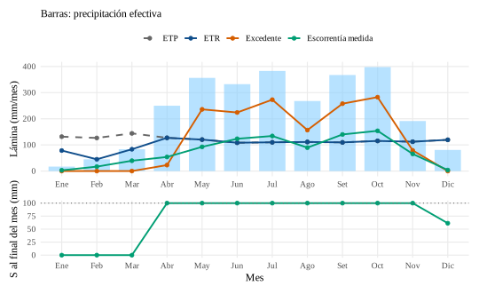
10° N, \(S_{\max} = 100\) mm, \(P_{ef} = 0.85\,P\). Datos hipotéticos. Solución:
- Thornthwaite con Willmott: ETP de 1436 mm.
- Diciembre, desde \(S = 100\): \(ETR = 119.48\) y \(S = 61.35\) mm.
- Enero: \(W = 78.44 < 131.55\); déficit de 53.11 mm.
- Año: \(ETR = 1240\), excedente 1532 y déficit 196 mm.
- Medido 916 mm: \(P - R = 2346 > ETP\), imposible.
Capacidad del suelo
Con \(S_{\max} \ge 296\) mm no hay déficit. ¿Cuánto hay que bajar la lluvia para que el excedente se parezca a la escorrentía medida?
Recarga potencial: método de Schosinsky
\[ HS_f = HS_i + P_i - ETR - R_p \]
- Retención en el follaje, \(Ret\): 12 % de la lluvia (20 % en bosque muy denso), mínimo 5 mm por mes.
- Lluvia infiltrada: \(P_i = C_i\,(P - Ret)\), con \(C_i = K_p + K_v + K_{fc} \le 1\) (pendiente, cobertura y textura).
- La ETR baja a medida que el suelo se seca (coeficientes \(C_1\) y \(C_2\)) (Schosinsky, 2006; Schosinsky & Losilla, 2000).
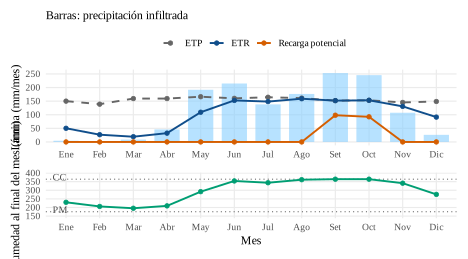
Pastizal, 1858 mm de lluvia (hipotético): \(C_i = 0.872\); \(ETR = 1224\) y \(R_p = 191\) mm, solo en setiembre y octubre.
Curva de Budyko
La fracción de la lluvia que se evapotranspira depende del índice de aridez \(\frac{ETP}{P}\) (Budyko, 1974; Zhang et al., 2001):
\[ \frac{ET}{P} = \frac{1 + w\,\dfrac{ETP}{P}}{1 + w\,\dfrac{ETP}{P} + \dfrac{P}{ETP}} \]
\(w = 2.0\) con bosque y 0.5 con pastos y cultivos. Solo para el caudal medio de largo plazo.
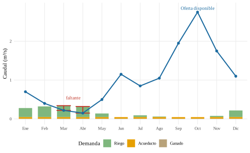
\(P = 2500\) y \(ETP = 1300\) mm: bosque 1213 mm de caudal, pasto 1510 mm.
Referencias
Alcamo, J., Döll, P., Henrichs, T., Kaspar, F., Lehner, B., Rösch, T., & Siebert, S. (2003). Global estimates of water withdrawals and availability under current and future «business-as-usual» conditions. Hydrological Sciences Journal, 48(3), 339-348. https://doi.org/10.1623/hysj.48.3.339.45278
Allen, R. G., Pereira, L. S., Raes, D., & Smith, M. (1998). Crop evapotranspiration: Guidelines for computing crop water requirements (FAO Irrigation and Drainage Paper 56). Food and Agriculture Organization of the United Nations. https://www.fao.org/4/x0490e/x0490e00.htm
Allen, R. J., & DeGaetano, A. T. (2002). Re-evaluation of extreme rainfall areal reduction factors. 13th Conference on Applied Climatology. https://ams.confex.com/ams/pdfpapers/41142.pdf
Aparicio, F. J. (1992). Fundamentos de hidrología de superficie. Editorial Limusa.
Asamblea Legislativa de la República de Costa Rica. (1942). Ley de Aguas n.º 276. Sistema Costarricense de Información Jurídica.
Budyko, M. I. (1974). Climate and life. Academic Press.
Chow, V. T., Maidment, D. R., & Mays, L. W. (1988). Applied hydrology. McGraw-Hill.
Falkenmark, M. (1989). The massive water scarcity now threatening Africa: Why isn’t it being addressed? Ambio, 18(2), 112-118.
Hargreaves, G. H., & Samani, Z. A. (1985). Reference crop evapotranspiration from temperature. Applied Engineering in Agriculture, 1(2), 96-99. https://doi.org/10.13031/2013.26773
Holdridge, L. R. (1967). Life zone ecology (Ed. revisada). Tropical Science Center.
Instituto Meteorológico Nacional. (2025). Instituto Meteorológico Nacional de Costa Rica. Ministerio de Ambiente y Energía (MINAE). https://www.imn.ac.cr/
Kimura, N., Tai, A., Chiang, S., & Kitoh, A. (2014). Hydrological flood simulation using a design hyetograph created from extreme weather data of a high-resolution atmospheric general circulation model. Water, 6(2), 345-366. https://doi.org/10.3390/w6020345
Leclerc, G., & Schaake, J. C. (1972). Derivation of hydrologic frequency curves (Report 142). Massachusetts Institute of Technology, Department of Civil Engineering.
Linsley, R. K., Kohler, M. A., & Paulhus, J. L. H. (1958). Hydrology for engineers. McGraw-Hill.
Matalas, N. C., & Jacobs, B. (1964). A correlation procedure for augmenting hydrologic data (Professional Paper 434-E). U.S. Geological Survey. https://doi.org/10.3133/pp434E
Ministerio de Ambiente y Energía, Dirección de Agua. (2021). Manual técnico de dotaciones de agua. MINAE, San José, Costa Rica. https://da.go.cr/wp-content/uploads/2016/06/MANUAL_TECNICO_DE_DOTACIONES_DE_AGUA.pdf
Monteith, J. L. (1965). Evaporation and environment. En The state and movement of water in living organisms (Vol. 19, pp. 205-234). Cambridge University Press.
Mu, Q., Zhao, M., & Running, S. W. (2011). Improvements to a MODIS global terrestrial evapotranspiration algorithm. Remote Sensing of Environment, 115(8), 1781-1800. https://doi.org/10.1016/j.rse.2011.02.019
Paulhus, J. L. H., & Kohler, M. A. (1952). Interpolation of missing precipitation records. Monthly Weather Review, 80(8), 129-133. https://doi.org/10.1175/1520-0493(1952)080<0129:IOMPR>2.0.CO;2
Penman, H. L. (1948). Natural evaporation from open water, bare soil and grass. Proceedings of the Royal Society of London. Series A, Mathematical and Physical Sciences, 193(1032), 120-145. https://doi.org/10.1098/rspa.1948.0037
Priestley, C. H. B., & Taylor, R. J. (1972). On the assessment of surface heat flux and evaporation using large-scale parameters. Monthly Weather Review, 100(2), 81-92. https://doi.org/10.1175/1520-0493(1972)100<0081:OTAOSH>2.3.CO;2
Rippl, W. (1883). The capacity of storage-reservoirs for water-supply. Minutes of the Proceedings of the Institution of Civil Engineers, 71, 270-278. https://doi.org/10.1680/imotp.1883.21797
Rodríguez, C., & Saborío, L. (1983). Balance hídrico y clasificación climática aplicada a Costa Rica. Instituto Costarricense de Electricidad (ICE).
Schosinsky, G. (2006). Cálculo de la recarga potencial de acuíferos mediante un balance hídrico de suelos. Revista Geológica de América Central, 34-35, 13-30. https://www.redalyc.org/pdf/454/45437342002.pdf
Schosinsky, G., & Losilla, M. (2000). Modelo analítico para determinar la infiltración con base en la lluvia mensual. Revista Geológica de América Central, 23, 43-55.
Searcy, J. K. (1959). Flow-duration curves (Water-Supply Paper 1542-A). U.S. Geological Survey. https://doi.org/10.3133/wsp1542A
Searcy, J. K., & Hardison, C. H. (1960). Double-mass curves (Water-Supply Paper 1541-B). U.S. Geological Survey. https://doi.org/10.3133/wsp1541B
Senay, G. B., Bohms, S., Singh, R. K., Gowda, P. H., Velpuri, N. M., Alemu, H., & Verdin, J. P. (2013). Operational evapotranspiration mapping using remote sensing and weather datasets: A new parameterization for the SSEB approach. Journal of the American Water Resources Association, 49(3), 577-591. https://doi.org/10.1111/jawr.12057
Shepard, D. (1968). A two-dimensional interpolation function for irregularly-spaced data. Proceedings of the 1968 23rd ACM National Conference, 517-524. https://doi.org/10.1145/800186.810616
Shuttleworth, W. J. (2012). Terrestrial hydrometeorology. Wiley-Blackwell.
Smakhtin, V. U. (2001). Low flow hydrology: a review. Journal of Hydrology, 240(3–4), 147-186. https://doi.org/10.1016/S0022-1694(00)00340-1
Thiessen, A. H. (1911). Precipitation averages for large areas. Monthly Weather Review, 39(7), 1082-1084. https://doi.org/10.1175/1520-0493(1911)39<1082b:PAFLA>2.0.CO;2
Thomas, H. A., & Fiering, M. B. (1962). Mathematical synthesis of streamflow sequences for the analysis of river basins by simulation. En A. Maass, M. M. Hufschmidt, R. Dorfman, H. A. Thomas, S. A. Marglin, & G. M. Fair (Eds.), Design of water-resource systems (pp. 459-493). Harvard University Press.
Thornthwaite, C. W. (1948). An approach toward a rational classification of climate. Geographical Review, 38(1), 55-94. https://doi.org/10.2307/210739
Thornthwaite, C. W., & Mather, J. R. (1955). The water balance (Publications in Climatology 8(1)). Drexel Institute of Technology, Laboratory of Climatology.
Turc, L. (1954). Le bilan d’eau des sols: relations entre les précipitations, l’évaporation et l’écoulement. Annales Agronomiques, 5, 491-595.
Villón Béjar, M. (2002). Hidrología (2.ª ed.). Editorial Villón.
Vogel, R. M., & Fennessey, N. M. (1994). Flow-duration curves. I: new interpretation and confidence intervals. Journal of Water Resources Planning and Management, 120(4), 485-504. https://doi.org/10.1061/(ASCE)0733-9496(1994)120:4(485)
Vörösmarty, C. J., Green, P., Salisbury, J., & Lammers, R. B. (2000). Global water resources: Vulnerability from climate change and population growth. Science, 289(5477), 284-288. https://doi.org/10.1126/science.289.5477.284
Willmott, C. J., Rowe, C. M., & Mintz, Y. (1985). Climatology of the terrestrial seasonal water cycle. Journal of Climatology, 5, 589-606. https://doi.org/10.1002/joc.3370050602
Zhang, L., Dawes, W. R., & Walker, G. R. (2001). Response of mean annual evapotranspiration to vegetation changes at catchment scale. Water Resources Research, 37(3), 701-708. https://doi.org/10.1029/2000WR900325
Hidrología Aplicada a la Ingeniería Civil